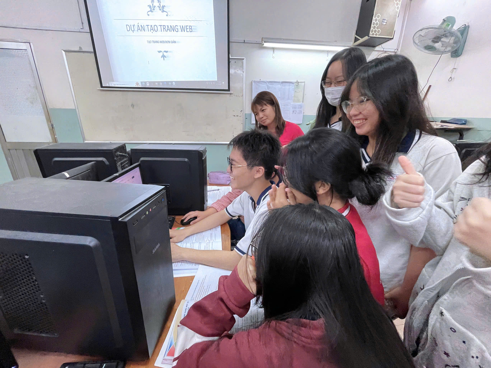

Phương pháp dạy học dự án
1. Khái niệm
Dạy học dựa trên dự án là cách thức tổ chức dạy học trong đó học sinh thực hiện một nhiệm vụ học tập phức hợp, có sự kết hợp giữa lý thuyết và thực hành, tạo ra các sản phẩm có thể giới thiệu, trình bày.
2. Các hình thức của dạy học dự án
2.1. Dự án nghiên cứu
Học sinh tìm hiểu, phân tích một vấn đề cụ thể.
2.2. Dự án xây dựng sản phẩm
Học sinh tạo ra sản phẩm như trang web, ứng dụng.
2.3. Dự án dịch vụ cộng đồng
Học sinh áp dụng kiến thức để giải quyết vấn đề xã hội.
3. Cấu trúc của dạy học dự án
Dạy học dự án bao gồm nhiều giai đoạn quan trọng nhằm đảm bảo học sinh có thể tiếp cận, thực hiện và hoàn thành dự án một cách hiệu quả. Cấu trúc này thường gồm các bước sau:
3.1. Xác định vấn đề và mục tiêu dự án
- Giáo viên lựa chọn hoặc hướng dẫn học sinh xác định một vấn đề thực tế có liên quan đến bài học.
- Xác định mục tiêu cần đạt được trong dự án, bao gồm kiến thức, kỹ năng và thái độ.
- Đề xuất các câu hỏi trọng tâm giúp học sinh định hướng nghiên cứu và phát triển dự án.
3.2. Lập kế hoạch thực hiện dự án
- Học sinh cùng giáo viên thảo luận về kế hoạch triển khai dự án.
- Phân chia nhiệm vụ cụ thể cho từng cá nhân hoặc nhóm trong lớp.
- Xác định nguồn tài liệu, công cụ, thời gian thực hiện và các yếu tố cần thiết khác.
- Thiết lập tiêu chí đánh giá dự án ngay từ đầu.
3.3. Tiến hành dự án
- Học sinh thực hiện các nhiệm vụ theo kế hoạch đã đề ra.
- Giáo viên đóng vai trò cố vấn, hỗ trợ, giải đáp thắc mắc và theo dõi tiến độ.
- Học sinh tự nghiên cứu, thu thập dữ liệu, thử nghiệm và hoàn thiện sản phẩm.
- Các nhóm hoặc cá nhân có thể báo cáo tiến độ theo từng giai đoạn để nhận phản hồi từ giáo viên và bạn bè.
3.4. Kiểm tra, đánh giá và chỉnh sửa
- Học sinh tự đánh giá quá trình làm việc của bản thân và nhóm.
- Giáo viên kiểm tra, góp ý về nội dung, phương pháp và kết quả dự án.
- Học sinh tiếp thu phản hồi, chỉnh sửa và hoàn thiện sản phẩm.
3.5. Trình bày sản phẩm dự án
- Học sinh thuyết trình về sản phẩm của mình trước lớp, giáo viên hoặc hội đồng đánh giá.
- Trình bày cách thức thực hiện, các khó khăn gặp phải và cách khắc phục.
- Thực hiện phản biện, trả lời câu hỏi từ giáo viên và bạn học.
3.6. Tổng kết, đánh giá và rút kinh nghiệm
- Giáo viên tổng kết, chỉ ra những điểm mạnh và hạn chế của dự án.
- Học sinh rút kinh nghiệm từ dự án để cải thiện kỹ năng và phương pháp làm việc trong tương lai.
- Đánh giá tác động của dự án đối với việc học tập và ứng dụng thực tế.
4. Đặc điểm của dạy học dự án
Dạy học theo dự án sẽ có những đặc điểm sau
4.1. Dạy học theo dự án có tính định hướng thực tiễn
Chủ đề của mỗi dự án thường gắn liền với những tình huống thực tiễn của xã hội, thực tiễn đời sống phù hợp với trình độ và kĩ năng của người học. Những dự án này có ý nghĩa thực tiễn gắn việc học tập trong nhà trường với thực tiễn ngoài xã hội.
4.2. Dạy học theo dự án có định hướng đến hứng thú người học
Học sinh được trực tiếp tham gia lựa chọn, đề xuất dự án hoặc có thể thống nhất, thảo luận với giáo viên về chủ đề và nội dung dự án phù hợp với khả năng và hứng thú của học sinh. Ngoài ra, những hứng thú này còn có thể tiếp tục phát triển trong quá trình thực hiện dự án. Đặc biệt, người học được nghiên cứu thực tiễn, trải nghiệm môi trường xung quanh, sử dụng công nghệ tiên tiến và hiện đại và phát triển những kĩ năng trong quá trình làm việc nhóm.
4.3. Dạy học theo dự án có định hướng hành động
Khác với các phương pháp và hình thức tổ chức dạy học khác, trong quá trình thực hiện dự án phải có sự kết hợp giữa lý thuyết và vận dụng những lý thuyết đó vào hoạt động thực tiễn. Để xây dựng dự án và lập kế hoạch thực hiện, học sinh phải nắm vững kiến thức lý thuyết và có kĩ năng thực hành, hoạt động thực tiễn.
4.4. Dạy học theo dự án mang tính định hướn sản phẩm
Định hướng này thể hiện ở chỗ là thực hiện dự án phải tạo ra sản phẩm. Sản phẩm của dự án không bao giờ giới hạn trong những thu hoạch lý thuyết mà có thể là báo cáo kết quả nghiên cứu, mô hình, bản vẽ,… Những sản phẩm này có thể được giới thiệu, công bố và có thể chuyển giao được. Để có một sản phẩm tốt do người học tự làm, giáo viên phải khéo léo điều chỉnh dự án sao cho sản phẩm của dự án là kết quả của quá trình thực hiện một công việc thực tế chứ không chỉ là trình bày lại các thông tin thu thập được.
4.5. Dạy học theo dự án đòi hỏi tính tự lực cao của người học
Trong dạy học dự án, người dạy là người tổ chức, điều khiển người học tiến hành dự án, người học trực tiếp tham gia dự án. Hiệu quả của việc dạy học theo dự án càng cao khi người dạy càng khuyến khích được tính trách nhiệm và sự sáng tạo của người học ở mọi khâu của dạy học dự án (hình thành ý tưởng thực hiện dự án, tổng kết và báo cáo kết quả). Do vậy, cũng đòi hỏi người học phải hoạt động tích cực, có trách nhiệm và sáng tạo trong việc giải quyết các vấn đề trong các giai đoạn thực hiện dự án.
4.6. Dự án dạy học mang nội dung phức hợp
Nội dung dự án có sự kết hợp tri thức của nhiều lĩnh vực, nhiều ngành hoặc môn học khác nhau nhằm giải quyết một vấn đề. Từ đó, để có thể hoàn thành một dự án, học sinh cần huy động kiến thức từ nhiều môn học khác nhau, lựa chọn và sử dụng thông tin ở nhiều lĩnh vựa khác nhau. Thông qua đó, có thể kiểm tra, củng cố, mở rộng hiểu biết về lý thuyết cũng như rèn luyện kĩ năng hoạt động, tích lũy kinh nghiệm thực tiễn.
4.7. Dạy học theo dự án có sự cộng tác làm việc
Chính vì nội dung dự án có sự kết hợp tri thức của nhiều lĩnh vực, nhiều ngành khác nhau nên nhiệm vụ học tập của dự án thường được thực hiện theo nhóm. Một dự án có thể chia làm nhiều công đoạn, mỗi công đoạn một nhóm thực hiện. Cũng có thể một dự án do một nhóm thực hiện trong đó có sự cộng tác làm việc và phân công công việc giữa các thành viên trong nhóm. Điều này đòi hỏi học sinh phải sẵn sàng có kĩ năng hoạt động cộng tác giữa các thành viên trong nhóm. Quá trình cộng tác làm việc trong nhóm giúp cho sản phẩm có chất lượng hơn, tốn ít thời gian hơn vì nó đã kết hợp và phát huy được sở trường của mỗi cá nhân. Bên cạnh đó, các dự án không chỉ dừng lại ở sự tương tác giữa học sinh với học sinh, giữa học sinh và giáo viên cũng như các lực lượng xã hội khác cùng tham gia dự án nên hoạt động dạy học có tính xã hội cao.
5. Tác dụng của dạy học dự án
5.1. Dạy học dự án làm cho nội dung học tập trở nên có ý nghĩa hơn
- Trong dạy học dự án, nội dung học tập trở nên có ý nghĩa hơn bởi vì nó đưcọ tích hợp các vấn đề của đời sống thực, từ đó kích thích hứng thú học tập của người học.
- Dạy học dự án gắn lý thuyết với thực hành, tư duy và hành động, nhà trường và xã hội, giúp việc học tập trong nhà trường giống hơn với việc học tập trong thế giới thật.
- Người học có cơ hội thực hành và phát triển khả năng của mình để hoạt động trong một môi trường phức tạp giống như sau này họ sẽ gặp phải trong cuộc sống.
5.2. Dạy học theo dự án góp phần đổi mới phương pháp dạy học, thay đổi phương thức đào tạo
- Học tập dự án chuyển giảng dạy từ "giáo viên nói" thành "học sinh làm". Người học trở thành người giải quyết vấn đề, ra quyết định chứ không phải là người nghe thụ động. Họ hợp tác theo nhóm, tổ chức hoạt động, tiến hành nghiên cứu, giải quyết vấn đề, tổng hợp thông tin, tổ chức thời gian và phản ánh về việc học của mình.
- Dạy học dự án tạo điều kiện cho nhiều phong cách học tập khác nhau, sử dụng thông tin của những môn học khác nhau. Nó giúp người học với cùng một nội dung nhưng có thể thực hiện theo những cách khác nhau.
- Dạy học dự án yêu cầu học sinh sự tư duy tích cực để giải quyết vấn đề, kích thích động cơ, hứng thú học tập.
- Dạy học dự án khuyến khích việc sử dụng các kỹ năng tư duy bậc cao, giúp cho người học hiểu biết sâu sắc hơn nội dung học tập.
- Dạy học dự án là hình thức quan trọng để thực hiện phương thức đào tạo con người phát triển toàn diện, học đi đôi với hành, kết hợp giữa học tập và nghiên cứu khoa học.
5.3. Dạy học dự án tạo ra môi trường thuận lợi cho người học rèn luyện và phát triển
- Dạy học dự án giúp người học học được nhiều hơn vì trong hầu hết các dự án, học sinh phải làm những bài tập liên quan đến nhiều lĩnh vực.
- Học sinh nào cũng có cơ hội để hoạt động vì nhiệm vụ học tập đến được với tất cả mọi người. Học sinh có cơ hội để thử các năng lực khác nhau của bản thân khi tham gia vào một dự án.
- Học sinh được rèn khả năng tư duy, suy nghĩ sâu sắc khi gặp những vấn đề phức tạp. Học sinh có điều kiện để khám phá, đánh giá, giải thích và tổng hợp thông tin.
- Học sinh được rèn khả năng vận dụng những gì đã học, đặc biệt các kiến thức về khoa học, công nghệ.
- Khi lập đề cương cho dự án, người học phải tưởng tượng, phác họa những dự kiến, kế hoạch hành động, vì vậy trí tưởng tượng cùng với tính tích cực, sáng tạo của họ được rèn luyện và phát triển.
- Phát triển năng lực đánh giá. Dạy học dự án đòi hỏi nhiều dạng đánh giá khác nhau và thường xuyên, bao gồm đánh giá của giáo viên, đánh giá lẫn nhau của học sinh, tự đánh giá và phản hồi.
- Học sinh có cơ hội lựa chọn và kiểm soát việc học của chính mình, cũng như cơ hội cộng tác với các bạn cùng lớp làm tăng hứng thú học tập.
- Dạy học dự án giúp học sinh tự tin hơn khi ra trường do họ được phát triển những kỹ năng sống cần thiết: khả năng đưa ra những quyết định chính xác; khả năng giải quyết những vấn đề phức tạp; khả năng làm việc tốt với người khác; sự chủ động, linh hoạt và sáng tạo.
5.4. Dạy học dự án phát huy tính tích cực, tự lực, chủ động, sáng tạo của người học
- Người học là trung tâm của dạy học dự án, từ vị trí thụ động chuyển sang chủ động, vì vậy dạy học dự án vừa tạo điều kiện, vừa buộc người học phải làm việc tích cực hơn.
- Dạy học dự án cho phép người học tự chủ nhiều hơn trong công việc, tự xây dựng kế hoạch đến việc thực hiện dự án, tạo ra các sản phẩm. Nhờ thế dạy học dự án phát huy tính tích cực, tự lực, tinh thần trách nhiệm, năng lực sáng tạo, năng lực giải quyết các vấn đề của người học.
5.5. Dạy học dự án giúp người học phát triển khả năng giao tiếp
- Dạy học dự án không chỉ giúp người học tiếp thu kiến thức, mà còn giúp họ nâng cao năng lực hợp tác, khả năng giao tiếp với người khác.
- Dạy học dự án thúc đẩy sự cộng tác giữa các học sinh và giáo viên, giữa các học sinh với nhau, nhiều khi mở rộng đến cộng đồng.
6. Hạn chế và khó khăn của dạy học dự án
6.1. Hạn chế
- Dạy học theo dự án đòi hỏi nhiều thời gian: Đây là một trong những trở ngại lớn nhất như không bố trí được thời gian hoặc giáo viên không linh động thì bước học sinh phải làm việc ngoài giờ học. Trong khi, thời gian chính khóa đã chiếm khá nhiều thời gian của học sinh nên khi thực hiện dự án có thể dẫn tới việc làm cho cơ thể mệt là không thành công.
- Dạy học theo dự án không phù hợp với những bài học truyền thụ mang tính lý thuyết: Dạy học theo dự án không thể thay thế phương pháp dạy học nêu vấn đề, thuyết trình, đàm thoại trong những bài học mang tính lý thuyết hoặc thông báo thông tin. Trong chương trình phổ thông hiện nay, chỉ có một số bài có thể áp dụng phương pháp này, không thể dùng phương pháp này suốt trong năm học. Chính điều này, đòi hỏi người giáo viên phải tận dụng thời gian để truyền đạt tốt nhất có thể theo đúng phương pháp này.
- Dạy học theo dự án đòi hỏi khả năng làm việc cao của học sinh và giáo viên: Phương pháp này đòi hỏi học sinh phải làm việc độc lập, chủ động, tích cực khi những dự án kéo dài trong thời gian tương đối dài, nội dung kiến thức khó và liên môn. Đối với giáo viên thì phải có sự chuẩn bị, tập luyện dẫn cho học sinh từ các dự án nhỏ, dự án trung bình đến các dự án lớn với tần suất nhiều cũng sẽ tác động đến sức khỏe và thời gian để học sinh được sử dụng hiệu quả hơn. Do vậy, nếu như giáo viên không cẩn thận, không đầu tư thì tình hình sẽ khó khăn so với những bài học truyền thuyết khác.
- Dạy học theo dự án đòi hỏi phương tiện vật chất và tài chính nhất định: Đây là một trở ngại lớn khi áp dụng dạy học theo dự án trong giáo dục phổ thông. Những phương tiện hỗ trợ cho dạy học theo dự án như phòng thí nghiệm, máy ảnh, máy quay, phương tiện đi lại... đòi hỏi phải có sự đầu tư ban đầu. Hơn nữa, những phương tiện này không phải nhà trường phổ thông nào, học sinh nào cũng có thể thực hiện.
6.2. Khó khăn
- Xác định một dự án, thiết kế các hoạt động và lựa chọn phương pháp thích hợp.
- Thiết lập mục tiêu rõ ràng cho các giai đoạn khác nhau của dự án.
- Tiến hành điều tra, tìm những câu hỏi để thu thập thông tin một cách khoa học.
- Quản lý thời gian, giữ đúng thời hạn cho từng công việc và khi kết thúc dự án.
- Phối hợp và hợp tác trong nhóm.
- Muốn hiểu đúng và đầy đủ về dạy học dự án.
- Thiết kế một dự án vừa gắn với nội dung dạy học vừa gắn với thực tiễn đời sống.
- Tổ chức thực hiện, theo dõi dự án, giám sát tiến độ, quản lý lớp học.
- Đưa ra phản hồi và hỗ trợ khi cần thiết.
- Sử dụng công nghệ thông tin để hỗ trợ dự án.
- Thiết kế các tiêu chí đánh giá cho một dự án cụ thể.
- Đề xuất ý tưởng và chọn đề tài.
- Chia nhóm và nhận nhiệm vụ.
- Lập kế hoạch thực hiện nhiệm vụ.
- Học sinh thu thập kết quả, công bố sản phẩm trước lớp.
- Tiến hành đánh giá và rút kinh nghiệm để thực hiện dự án tiếp theo.
6.2.1. Người học thường gặp khó khăn khi
6.2.2. Giáo viên thường gặp khó khăn khi
7. Cách tiến hành
7.1. Giai đoạn 1: Chuẩn bị dự án
7.2. Giai đoạn 2: Thực hiện dự án
Học sinh thực hiện nhiệm vụ với các hoạt động: đề xuất các phương án, giải quyết, nghiên cứu tài liệu, tiến hành các thí nghiệm, trao đổi và hợp tác trong nhóm.